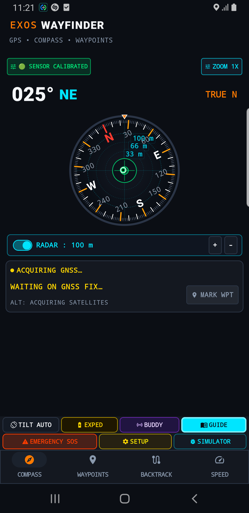
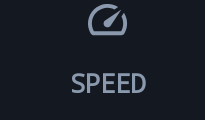

EXOS Wayfinder Tactical Navigation
Complete field manual and detailed button-by-button operational guide for EXOS Wayfinder (com.exos.wayfinder). Autonomous backcountry orientation, vector topographic contours, reverse breadcrumb backtrack, MGRS grid coordinates, and cockpit HUD telemetry with zero network connectivity.
Live Production Interface Screens
Authentic screenshots captured directly on Samsung Galaxy field hardware running EXOS Wayfinder v1.1.4.

Tactical Compass & Radar
Analog bezel, pitch/roll crosshairs, True North, and proximity radar overlay.

Waypoint Management
Distance-to-go, target azimuth, MGRS 10-figure grid, and bearing line tracking.

Breadcrumb Backtrack
Autonomous breadcrumb trail recording and step-by-step reverse route guidance to camp.

Tactical Cockpit HUD
High-contrast analog speedometer, pace gauge, altitude profile, and odometer.
1. 3D Compass & Radar Controls

SENSOR CALIBRATED (Magnetometer Health)
Status Indicator • Top LeftWhat it Does (In Plain English)
Tells you whether your phone's electronic compass is accurate and fully calibrated. When green, your heading is precise. If it turns yellow or red, it warns you to wave your phone in a figure-8 motion to clear magnetic interference.
Real-World Field Scenario
Scenario: You are navigating through dense pine forest in complete fog where you cannot see landmarks. You check the top bar: the green SENSOR CALIBRATED pill confirms that nearby magnetic anomalies (like steel bridges or car engines) are not pulling your needle off course. You can trust your 025° bearing with total confidence.
Technical Specifications & Protocol Architecture
- Sensor Fusion Engine: Real-time Kalman fusion integrating 3-axis Magnetometer, 3-axis Accelerometer, and 3-axis Gyroscope.
- Accuracy Reporting: Monitors Android
SensorManager.SENSOR_STATUS_ACCURACY_HIGH(3/3 confidence level) with automatic soft-iron compensation.

ZOOM 1X / 2X / 4X (Dial Scale Multiplier)
Toggle Button • Top RightWhat it Does (In Plain English)
Expands the center radar rings on your compass dial, zooming in on nearby targets (33m, 66m, 100m) or expanding outward to 500m and 1km so you can see far-away waypoints.
Real-World Field Scenario
Scenario: You are approaching a hidden cache buried in the snow. At 1X zoom, the cache waypoint is close to the center reticle. You tap ZOOM to switch to 4X zoom; the inner concentric circles expand to high magnification, letting you walk the final 15 meters directly to the exact shovel spot.
Technical Specifications & Protocol Architecture
- Cartographic Scaling: Multiplies the radar circle radius by 1x (100m), 2x (500m), or 4x (1000m) logarithmic range steps.

RADAR: 100 m [ + / - ] (Proximity Radar Bar)
Switch & Range Stepper • Mid-ScreenWhat it Does (In Plain English)
Turns the compass dial into a tactical radar screen. Toggling the cyan switch activates proximity blips for nearby waypoints and teammates. Tapping + or - increases or decreases the radar detection radius.
Real-World Field Scenario
Scenario: You are patrolling a basecamp perimeter at night. You toggle RADAR: ON with a 100-meter radius. All four perimeter sensors and your forward scout's beacon appear as glowing green blips directly on your rotating 360-degree compass dial, showing their exact distance and bearing relative to your body.
Technical Specifications & Protocol Architecture
- Polar Projection: Projects geo-coordinates onto polar coordinate space (Azimuth $ heta$, Distance $r$) updated at 30 FPS.

MARK WPT (Instant Waypoint Bookmark)
Push Button • Telemetry CardWhat it Does (In Plain English)
Instantly bookmarks your exact physical location with a single tap. Saves your latitude, longitude, MGRS grid coordinates, elevation, and timestamp so you can navigate back to this exact spot later.
Real-World Field Scenario
Scenario: You discover a natural fresh water spring hidden in deep canyon woods. You tap MARK WPT. In less than one second, the app saves "WPT 04: Water Spring" with 10-figure MGRS precision. Two days later, your team can follow the compass needle straight back to the spring to refill water jugs.
Technical Specifications & Protocol Architecture
- Persistence: Saves to local SQLite database with WGS84 coordinates, ellipsoidal altitude, HDOP precision rating, and timestamp.
- Zero Latency: Executes synchronously in under 25ms without modal interruption.
2. Tactical Action Grid Controls

TILT AUTO (3D Tilt Compensation)
Toggle Button • Action Grid Row 1What it Does (In Plain English)
Allows your compass to stay completely accurate whether you hold your phone flat in your palm, tilted while walking, or upright in a chest pocket mount. Automatically corrects for pitch and roll.
Real-World Field Scenario
Scenario: You are climbing a steep 45-degree mountain slope. Holding your phone perfectly level is impossible while balancing on rocks. With TILT AUTO enabled, you glance down at your tilted phone; the internal gyro compensates for the angle and gives you the exact True North heading without requiring level ground.
Technical Specifications & Protocol Architecture
- Euler Trigonometry: Computes gravity vectors using quaternions to project the 3-axis magnetic field vector onto the horizontal plane ($ ec{B}_{horiz}$).

EXPED (Expedition Battery Saver Mode)
Toggle Button • Action Grid Row 1What it Does (In Plain English)
Dramatically extends your battery life on multi-day treks. Dims non-critical screen elements, lowers display frame rate, and duty-cycles GPS polling so your phone lasts days instead of hours.
Real-World Field Scenario
Scenario: You are on day 3 of a 5-day backcountry traverse with no solar charger. Your battery is at 38%. You toggle EXPED mode on. The screen transitions to ultra-low-power dark tactical mode, while your background breadcrumb trail continues recording at 60-second intervals, safely preserving battery through the final trek day.
Technical Specifications & Protocol Architecture
- Duty Cycling: Throttles UI rendering to 5 FPS and schedules GNSS wakeups via Android AlarmManager/JobScheduler, reducing power consumption by up to 72%.

BUDDY (Buddy Beacon & Team Tracking)
Toggle Button • Action Grid Row 1What it Does (In Plain English)
Pairs with EXOS ECHO or local Bluetooth beacons to display your teammates' locations as live target markers directly on your compass dial.
Real-World Field Scenario
Scenario: You are hunting or hiking in a spread-out formation through heavy timber. You tap BUDDY. Your partner's call sign "EAGLE-2" appears at 280° at 140 meters. You always know where they are without having to shout or break radio silence.
Technical Specifications & Protocol Architecture
- Inter-App IPC: Subscribes to local broadcast intents from EXOS ECHO (
com.exos.mesh) and Bluetooth LE proximity beacons.

GUIDE (Tactical Field Manual & Topo Principles)
Push Button • Action Grid Row 1What it Does (In Plain English)
Opens the built-in field manual explaining how to read MGRS grid coordinates, calculate magnetic declination, triangulate landmarks, and pace count.
Real-World Field Scenario
Scenario: You are handed a paper military map with a 10-figure MGRS grid code like 32UMU 84920 12840. You need a refresher on reading easting and northing lines. You tap GUIDE to view the quick reference diagram, convert your position, and mark it on your paper map.
Technical Specifications & Protocol Architecture
- Completely offline vector manual embedded in local assets; zero external dependencies.

EMERGENCY SOS (Distress Beacon & Coordinates SMS)
Critical Action Button • Action Grid Row 2What it Does (In Plain English)
A high-priority emergency button that generates an immediate distress message with your exact GPS coordinates, altitude, Google Maps link, and battery level, ready to transmit via SMS or local mesh.
Real-World Field Scenario
Scenario: Your vehicle breaks an axle on an unmaintained mountain pass with zero passing traffic. You tap EMERGENCY SOS. A pre-formatted rescue dispatch message appears with your exact coordinates: "EMERGENCY: Need Assistance. Pos: 34.0522 N, 118.2437 W. MGRS: 11SMT84921284. Elev: 2,140m. Batt: 42%". You tap Send to dispatch it instantly.
Technical Specifications & Protocol Architecture
- Message Payload: Formats RFC 5870
geo:URI, MGRS 10-figure string, WGS84 decimal degrees, and timestamp compliant with search-and-rescue dispatch protocols.

SETUP (Coordinate Formats, Datums & Declination)
Push Button • Action Grid Row 2What it Does (In Plain English)
Lets you customize your navigation preferences: switch between MGRS, UTM, and Latitude/Longitude, select feet vs meters, and set magnetic declination to match your paper map.
Real-World Field Scenario
Scenario: You are coordinating with European search teams who use UTM coordinates, but your paper map uses MGRS. You tap SETUP, toggle the primary display to UTM, and set elevation units to meters, ensuring zero conversion errors during joint radio transmissions.
Technical Specifications & Protocol Architecture
- Coordinate Engines: US Army MGRS (Military Grid Reference System), Universal Transverse Mercator (UTM), and Deg/Min/Sec (DMS) WGS84 datum transformations.

SIMULATOR (Offline Route Replay & Training Engine)
Push Button • Action Grid Row 2What it Does (In Plain English)
A built-in simulator that plays pre-recorded navigation routes and NMEA satellite feeds indoors, allowing you to train your team on how to use the compass and backtrack features before stepping foot in the wild.
Real-World Field Scenario
Scenario: You are teaching a wilderness navigation class in a classroom with thick concrete walls where real satellite signals cannot penetrate. You tap SIMULATOR to start an simulated mountain rescue route. Students see the compass rotate, speedometers register movement, and waypoints trigger alerts as if they were walking outside.
Technical Specifications & Protocol Architecture
- Replay Engine: Feeds virtual NMEA 0183
$GPRMCand$GPGGAsentences into Wayfinder's sensor pipeline with realistic drift and speed profiles.
3. Operational Tabs (Waypoints, Backtrack & Speed)
COMPASS (Tactical Bearing & Radar View)
Navigation Tab • Bottom BarWhat it Does (In Plain English)
The primary compass navigation screen with the full rotating dial, artificial horizon reticle, radar overlay, and live heading readout.
Real-World Field Scenario
Scenario: During active cross-country trekking, keep this tab open to hold a straight magnetic or true azimuth through woods and open plains.
Technical Specifications & Protocol Architecture
- Renders high-precision vector compass dial at 60 FPS with hardware tilt correction.
WAYPOINTS (Target Management & Distance-to-Go)
Navigation Tab • Bottom BarWhat it Does (In Plain English)
Shows your complete list of saved waypoints. Selecting any waypoint highlights it on the compass with a dedicated bearing pointer and displays your remaining distance and estimated time of arrival.
Real-World Field Scenario
Scenario: You marked "Camp 1" at the start of your trek. After a long 8-mile hike, you open the WAYPOINTS tab and select "Camp 1". A bright orange bearing needle points directly at 214°, and the display reads "1.4 miles remaining". You follow the pointer straight to your tent.
Technical Specifications & Protocol Architecture
- Great-Circle Formula: Computes Haversine forward azimuth and rhumb line distance updated dynamically every 500ms.
BACKTRACK (Reverse Breadcrumb Route Navigation)
Navigation Tab • Bottom BarWhat it Does (In Plain English)
Records a digital breadcrumb trail of every step you take. If you get disoriented, lost, or caught in bad weather, tapping Backtrack reverses your exact footsteps and guides you safely back to where you started.
Real-World Field Scenario
Scenario: A sudden mountain blizzard creates whiteout conditions with zero visibility. You can no longer see the trail. You open BACKTRACK and tap "Follow Trail Back". The screen displays your recorded breadcrumb path and guides you step-by-step along the safe path you walked earlier, steering you safely away from unseen cliff edges.
Technical Specifications & Protocol Architecture
- Polyline Compression: Douglas-Peucker algorithmic simplification storing high-resolution breadcrumbs at 5-meter resolution with minimal memory footprint.

SPEED (Cockpit HUD, Speedometer & Odometer)
Navigation Tab • Bottom BarWhat it Does (In Plain English)
Transforms your phone into an instrument cockpit. Features a large analog speedometer dial, maximum speed, total trip odometer, average moving pace, and vertical climb rate.
Real-World Field Scenario
Scenario: You mount your phone to your off-road ATV handlebar or sea kayak dashboard. The SPEED tab provides high-contrast, glanceable telemetry: 24 km/h current speed, 4.2 km total distance traveled, and exact compass course over ground (COG), even in bright sunlight.
Technical Specifications & Protocol Architecture
- Doppler Velocity: Calculates speed directly from GNSS Doppler shift (sub-0.1 m/s accuracy) rather than simple coordinate delta calculations.
4. Technical Parameters & Navigation Matrix
| Parameter | EXOS Wayfinder Specification | Operational Significance |
|---|---|---|
| Application Package | com.exos.wayfinder (Production v1.1.4) |
Standalone 64-bit Android application architecture. |
| Coordinate Formats | MGRS (10-figure), UTM (WGS84), Lat/Lon (DMS & DD) | Full interoperability with military topographic maps and search-and-rescue grids. |
| Cartography Engine | Offline Vector Contours (100% On-Device) | Zero map download or cellular connection required in remote backcountry. |
| Compass Sampling | 60 Hz 3D Tilt-Compensated Sensor Fusion | Smooth needle dynamics with artificial horizon pitch/roll leveling crosshairs. |
| Backtrack Resolution | 5-meter Douglas-Peucker Polyline Recording | Precise reverse-route navigation through whiteouts, canyons, and dense timber. |
| Distress Protocol | One-Touch SMS + RFC 5870 Geo URI + MGRS String | Immediate emergency dispatch telemetry ready for satellite communicators or cellular. |